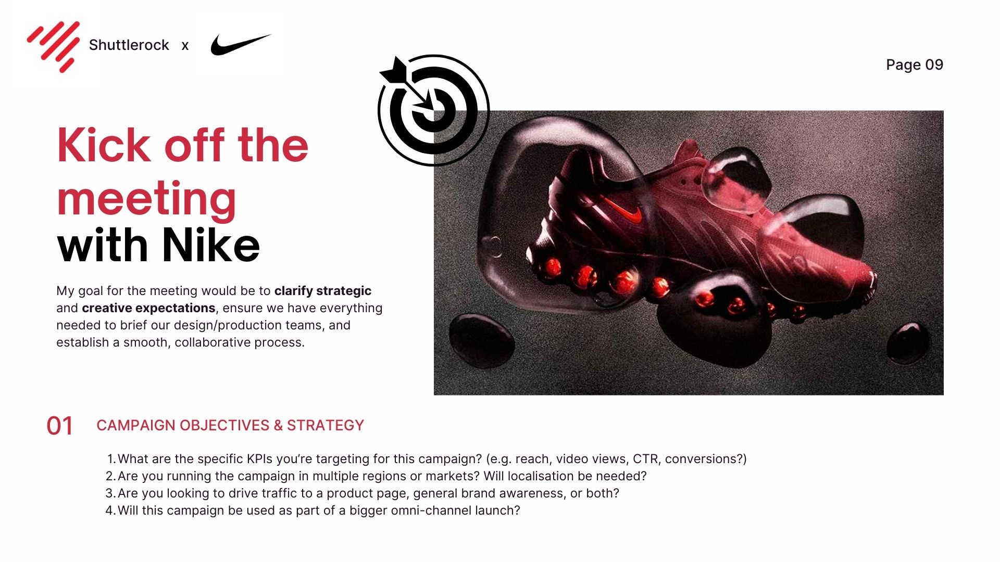
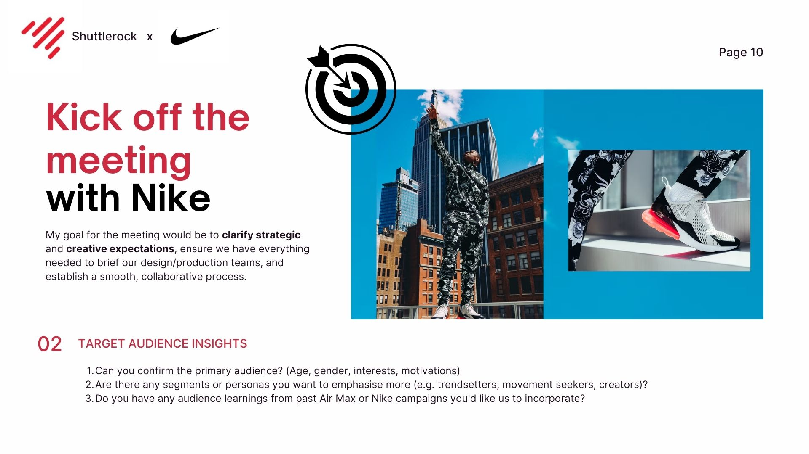
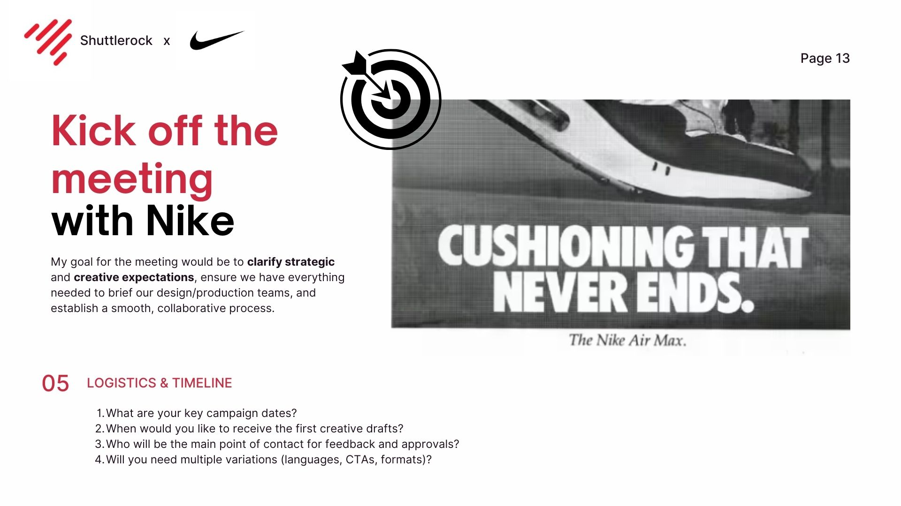
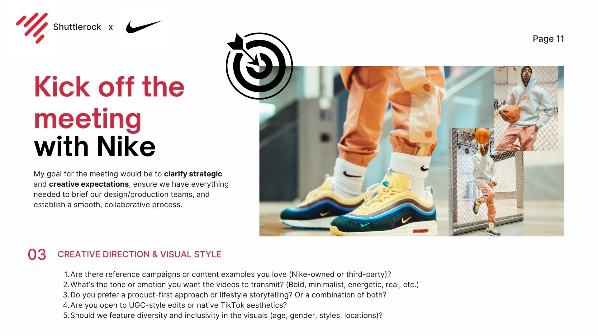

Feel the Future: Air Max
Creative Direction
Briefing Estratégico
Audience Insights
Creative Direction
Logistics & Timeline
Mobile-First
UGC Style
Documentación del Proyecto (Desliza →)




🔊 Toca para activar sonido